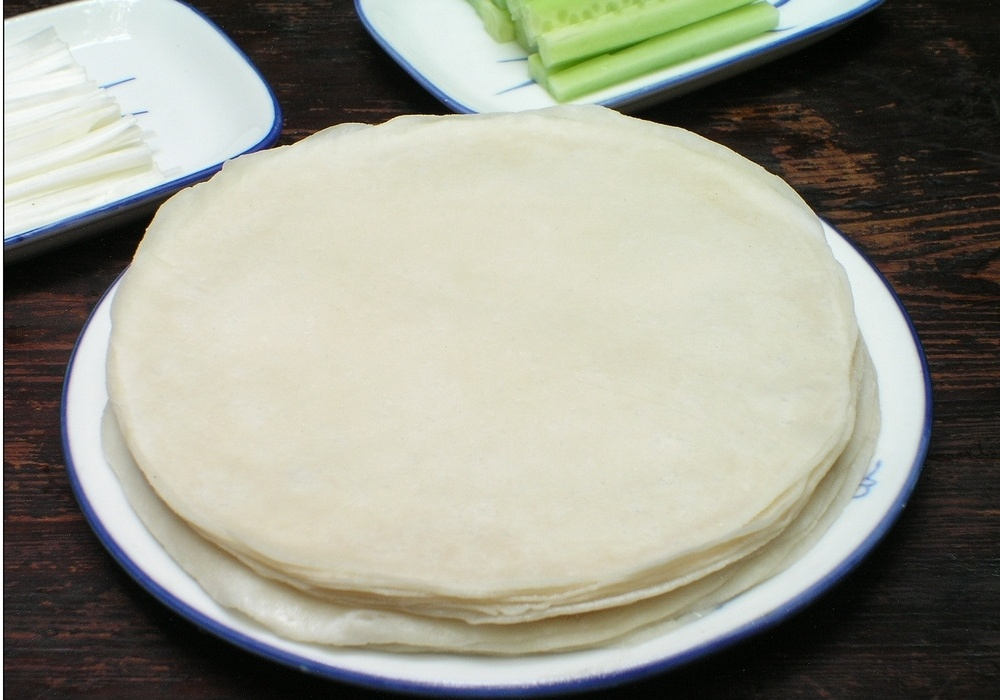

CATALOG
烤鸭饼
Serving note: ready to eat after wrapping grilled duck and other meat.
Shape: Round.
Size: diameter 140mm.
Processing type: Steamed.
Inner packaging: Plastic bag.
Storage condition: Keep frozen under -18℃.
Shelf life: 24 months.
▽
▽
▽
▽
Serving: Deep-fry after wrapped.
Shape: Square.
Size: 160x160mm, 215x215mm, 250x250mm.
Type: Raw.
Packaging: PE bag.
Storage: Frozen.
Serving: Boil or Fry after wrapped.
Shape: Square, Round.
Size: 85x85mm, Diameter 85mm.
Type: Raw.
Packaging: PE bag.
Storage: Frozen.
Filling: Non.
Shape: Fold flat.
Size: 40g, 50g, 60g (and custom) per piece.
Type: Steamed.
Packaging: PE bag.
Storage: Frozen.
Filling: Vegetables with Curry.
Shape: Triangle.
Size: 12.5g, 15g, custom.
Type: Raw, Pre-fried.
Packaging: Paper box, PE bag with tray.
Storage: Frozen.
We also have production site to process frozen seafoods for Asian and Japanese cuisine.
▷ Seafood Products
Vegetable Starter
Steamed Bun
Dimsum Wrapper
Asian Seafood
Frequent Asked Questions
Imprint & Terms
Privacy Policy
Get in Touch